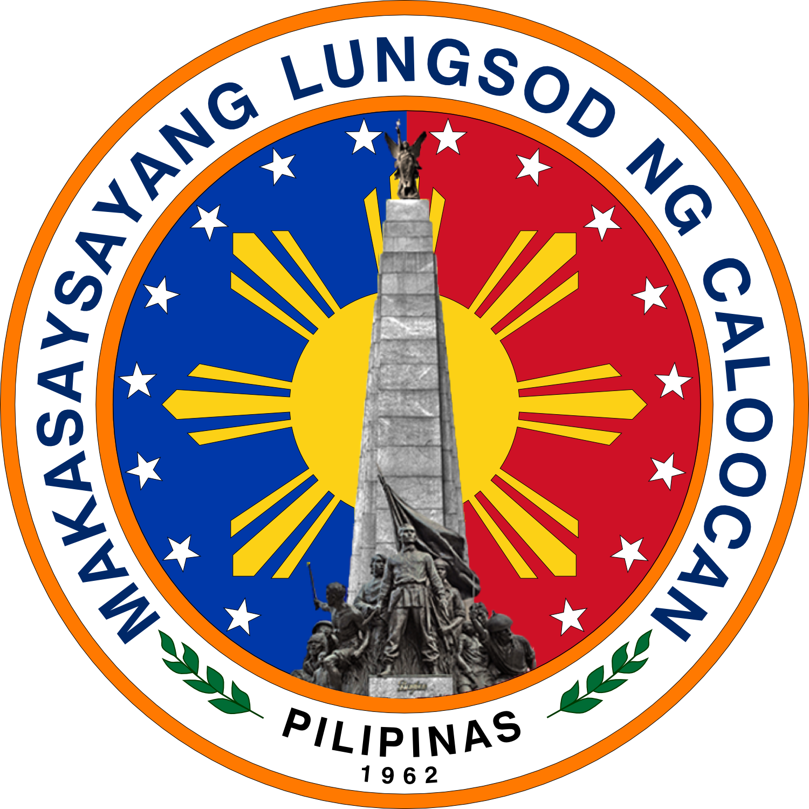

_01.jpg)

Welcome to my Hometown!
Where all sorts of things can happen and found
Caloocan, officially the City of Caloocan (Filipino: Lungsod ng Kalookan; IPA: [kalɔˈʔokan]), is a highly urbanized city in Metro Manila, Philippines. According to the 2020 census, it has a population of 1,661,584 people making it the fourth-most populous city in the Philippines.
Caloocan is divided into two geographical locations with a total combined area of 5,333.40 hectares (13,179.1 acres), a result of the 1949 expansion of Quezon City, which absorbed much of its territory. It was formerly part of the Province of Rizal in southern Luzon. It comprises what is known as the CAMANAVA area along with the cities of Malabon, Navotas and Valenzuela.
South Caloocan is bordered by Manila, Quezon City, Malabon, Navotas and Valenzuela. The presence of commercial and industrial activities combined with residential areas make it a highly urbanized central business district and a major urban center in the Northern District of Metropolitan Manila.North Caloocan shares its border with Quezon City and Valenzuela, Marilao, Meycauayan and San Jose del Monte in the province of Bulacan, and Rodriguez in the province of Rizal. It is composed of mostly residential subdivisions and extensive resettlement areas with scattered distribution of industrial estates mostly within road transit points and intersections.